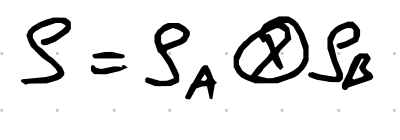
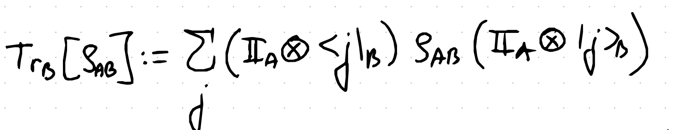
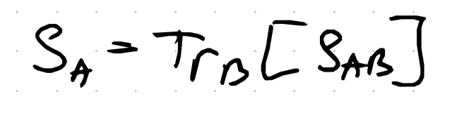
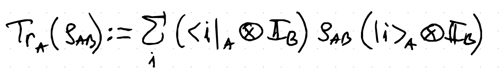
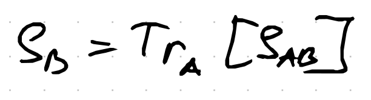
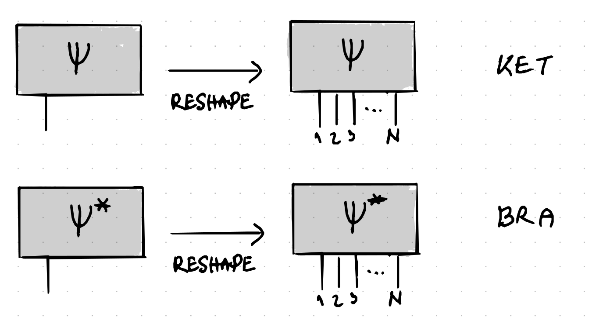
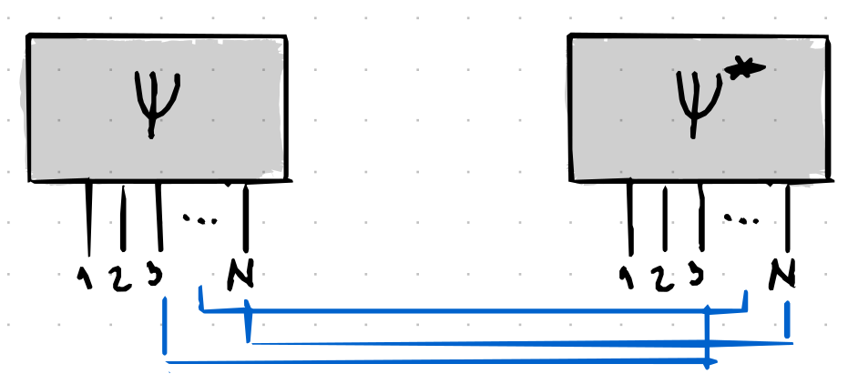
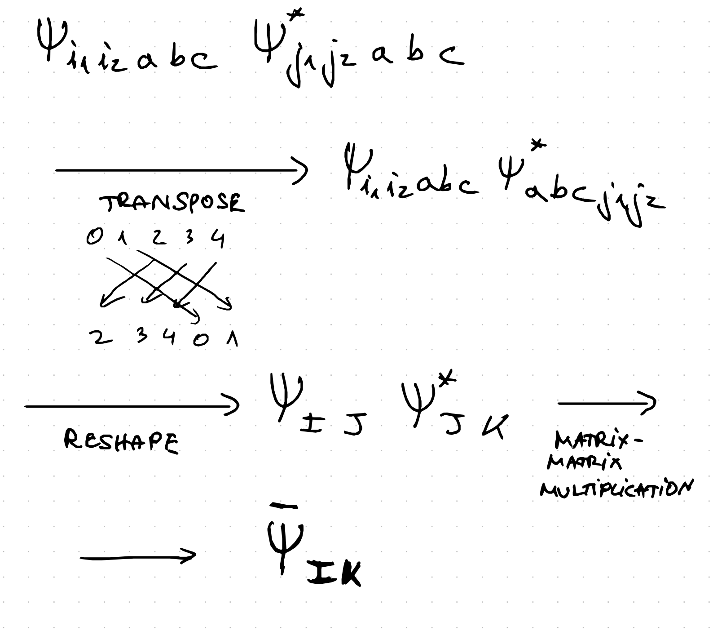

Partial Trace#
Here we define the partial trace and show how easy and efficient it is to perform this operation using tensor network representations and by employing the simple tricks and knowledge we have introduced in Lecture 1 and Lecture 2.
The most direct advantage of using the tensor network representation in computing the partial trace is that we avoid building the the total density matrix and only output the final reduced density matrix!
Definition#
Partial trace operation holds an important role in quantum information. Partial trace is an ‘inverse’ operation of the tensor product. Tensor product forms larger composity systems from smaller ones, while partial trace forms smaller systems by ignoring degree’s of freedom of the larger system. Partial trace is directly related to marginal probability distributions.
For a composite system
{kind=link}
the partial trace over the degrees of freedom of the Hilbert space on subsystem B with an orthonormal basis (kets over j)
{kind=link}
so we write
{kind=link}
On the other hand we can also perform a partial trace over the subsystem A and we would in that case have
{kind=link}
that we denote as
{kind=link}
Tensor Network Algorithm for Partial Trace#
Now we show how to perform this operation numerically given a pure state.
Step 1#
First reshape the pure state vector into N (corresponding to spin number of d = 2 dimension) legged tensor as
{kind=link}
Step 2#
Perform all the leg contractions between these two tensors that make up the subsystem we are tracing out.
{kind=link}
For example in this previous image we traced out spins 3,4,5,…,N, and kept the subsystem we are interested in to be on spins 1 and 2.
Symbolic manipulations example#
Explicitely in case we have a 5 qubit/spin and we want to trace out qubits/spins 3,4,5 we perform the following steps
{kind=link}
Here now I is of dimension 2 to the power of two twice, so basically 2^4, and K as well, and that now consitutes the reduced density matrix.
Python code#
Here is the Python code that performs the partial trace operation for qubits for any choice of subpartitions (non-contiguous also possible).
# import the library that allows us to deal with arrays efficiently
import numpy as np
# import ordering library
from collections import OrderedDict
def PartialTrace(N: int, index_list: np.ndarray, A: np.ndarray):
"""
Computes the partial trace over specified indices.
Args:
N (integer): Dimension of the tensor A in terms of the number of spins.
index_list (list of integers): List of indices to trace over. Must be ordered from smaller to bigger index.
A (state vector): Input pure state to perform partial trace on.
Returns:
out (matrix of floats): Resulting tensor after performing the partial trace.
Example:
zero = np.array([1.0,0.0])
one = np.array([0.0,1.0])
state = (1.0/np.sqrt(2.0))*(np.kron(zero,zero) + np.kron(one,one))
RDM = PartialTrace(2,[2],state)
print('Reduced Density Matrix =')
print(RDM)
"""
# Check if index_list is empty and it just returns the matrix A as there is nothing to take the trace over
if (len(index_list) == 0):
return A
# reshape the input vectors into tensors (here we exploit the fact that psi* is just the complex conjugate of psi )
reshape_array_default = np.full(N,2)
A_initial = A.reshape(reshape_array_default)
# generate initial transpose indices vector (we apply permutations and operatorion so transposition is correctly performed )
list_A = np.arange(N)
list_B = np.arange(N)
# this changing the indeces by one is because of python stuff (the numbering starts from zero and not 1)
index_list = np.array(index_list) - 1
##### generating the first transpose rule for A ###
## initial step of moving the indices to the left
for zz in range(0,len(index_list)):
list_A[zz] = index_list[zz]
## figure out what are the missing indices that happen because of overwritting in loop above
list_A_no_dupl = list(OrderedDict.fromkeys(list_A))
missing_indices = np.delete(np.arange(N), list_A_no_dupl)
## now replace the doubled indices with indices in the missing_indices array
counter = 0
for zz in range(len(index_list),len(list_A)):
for tt in range(0,len(index_list)):
if (list_A[zz] == index_list[tt]):
list_A[zz] = missing_indices[counter]
counter += 1
##### generating the first transpose rule for B ###
## initial step of moving the indices to the right
for zz in range(0,len(index_list)):
list_B[len(list_B) - zz - 1] = index_list[len(index_list) - zz - 1]
## figure out what are the missing indices that happen because of overwritting in loop above
list_B_no_dupl = list(OrderedDict.fromkeys(list_B))
missing_indices = np.delete(np.arange(N), list_B_no_dupl)
## now replace the doubled indices with indices in the missing_indices array
counter = 0
for zz in range(0,len(list_B)-len(index_list)):
for tt in range(0,len(index_list)):
if (list_B[zz] == index_list[tt]):
list_B[zz] = missing_indices[counter]
counter += 1
##### generating the second transpose rule for A ###
list_A_cut = list_A[len(index_list):]
list_A_cut_sort = np.sort(list_A_cut)
list_B_cut = list_B[:-len(index_list)]
list_B_cut_sort = np.sort(list_B_cut)
transpose2_A = np.append(index_list,list_A_cut_sort)
transpose2_B = np.append(list_B_cut_sort,index_list)
############### MAIN OPERATION AFTER ALL PREPARATION HAS BEEN PERFORMED ::: TRANSPOSITION ON A and B
A = A_initial.transpose(transpose2_A).reshape(2**len(index_list),2**(N - len(index_list)))
B = A_initial.transpose(transpose2_B).reshape(2**(N - len(index_list)),2**len(index_list))
# FINAL MULTIPLICATION
out = (A @ np.conjugate(B))
return out
# Explicite example of the 2 qubit bell state
zero = np.array([1.0,0.0])
one = np.array([0.0,1.0])
state = (1.0/np.sqrt(2.0))*(np.kron(zero,zero) + np.kron(one,one))
RDM = PartialTrace(2,[2],state)
print('Reduced Density Matrix =')
print(RDM)
Reduced Density Matrix =
[[0.5 0. ]
[0. 0.5]]
Note
Exercise1: Verify that the code produces correct result for the reduced density state by tracing over the bell states second qubit explicitely.
Exercise2: Verify that the function to perform partial trace follows the symbolic manipulations example for 5 qubits described above. So at each step of the function execution print the lists and cross reference with what should be happening.
Exercise3: Solve more examples of entangled pure states and check if the code produces correct outputs.